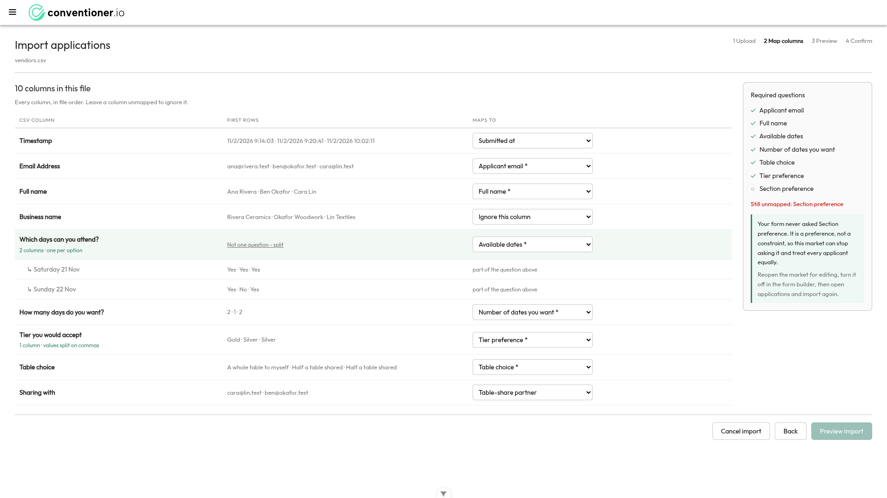
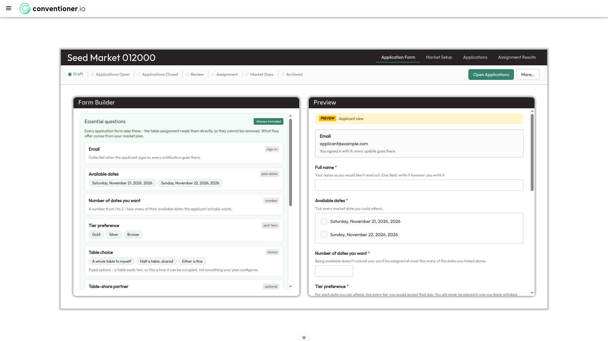
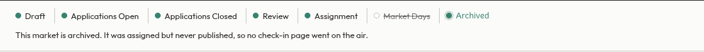
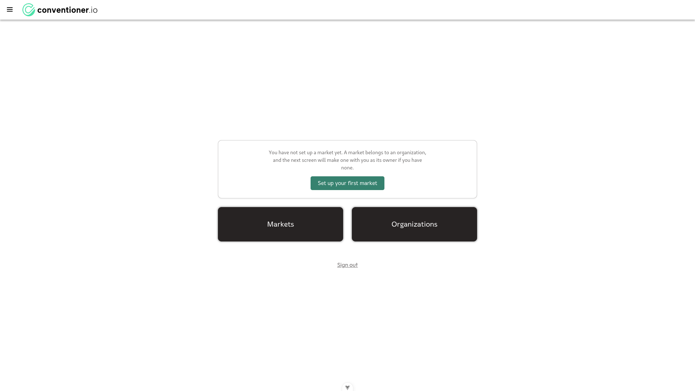
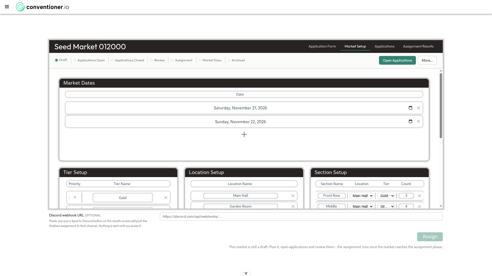
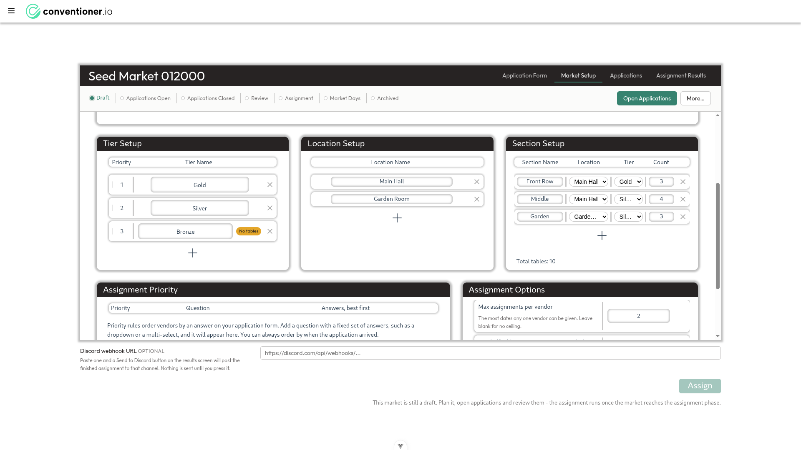
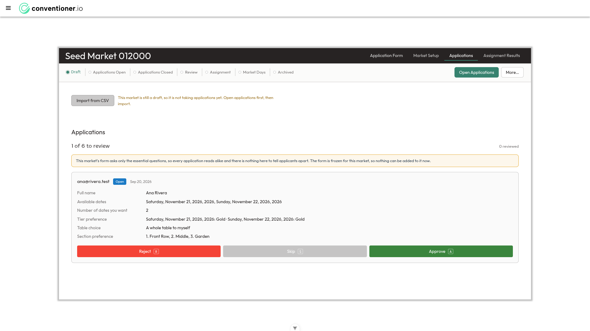
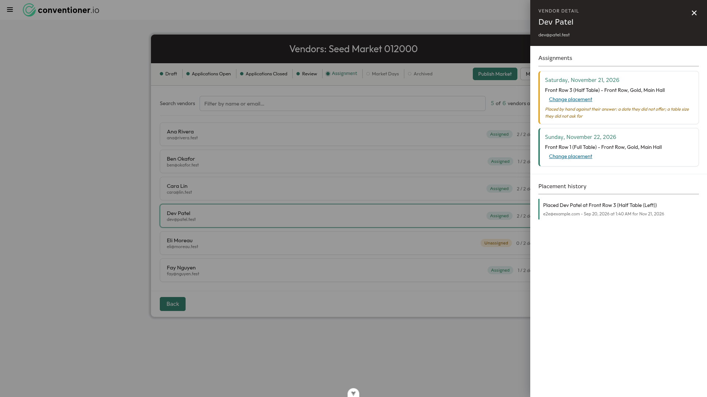

Every organizer flow the five merged epics touch, driven in a real browser against
dev at the design target. Fourteen findings, four of them regressions introduced by
the epics themselves, and a longer list of things that work exactly as they were specified to.
The features work. The frames around them do not. Nearly every acceptance criterion I could exercise held up - the pins, the swap, the override marking, the placement trail, the reasons, the names, the rail's spine and its menu, the publish dialog, the check-in URL. What the walk turned up instead falls into three clusters, and each cluster crosses several epics at once.
One: the market workspace is pinned to 80% of the viewport and hides half of itself. Two: four screens state things that are not true - a dashboard that denies your markets exist, an importer that sends you to a control that was never built, a rail that reports two different phases at once, and an archived market that says its check-in page never went live when it did. Three: four small regressions the epics introduced into their own territory.
Nothing here is a data-loss risk and nothing blocks a release outright. Two findings would embarrass the product in front of a real organizer on their first run.
| Epic | Verdict | Findings |
|---|---|---|
| E09 legible screens | Holds on colour and controls; the scroll-context story did not reach the market workspace, and it introduced the duplicated-year bug | F2, F3, F4, F5, F12 |
| E10 one lifecycle model | The rail is a clear improvement on the strip. Two defects: it can state the wrong phase, and it asserts a history it cannot know | F7, F13, F14 |
| E11 placements you can change | Every acceptance criterion I exercised held. Two gaps at the edges, neither in the stated scope | F9, F10 |
| E12 say why | Reasons, the tier guard and the card states all work. One population falls through the net | F8, F11 |
| E13 a vendor has a name | Names lead on every surface I could find. No findings | — |
Import an ordinary form export into a market whose plan has two or more sections and the wizard
stops at step 2 of 4. Six of seven required questions map cleanly; Section preference has no
column to map, so Preview import is hard-disabled. The advisory beside it is well
written and tells the organizer exactly what to do:
“Your form never asked Section preference. It is a preference, not a constraint, so this market can stop asking it and treat every applicant equally. Reopen the market for editing, turn it off in the form builder, then open applications and import again.”
I followed it. The essential-questions panel in the form builder is badged “Always included”, reads “…the table assignment reads them directly, so they cannot be removed”, and contains no interactive elements whatsoever. The advisory and the panel contradict each other, and the step the advisory names cannot be taken.
button[Preview import].disabled === true ·
document.querySelector('[data-testid=essential-fields-panel]').querySelectorAll('button,input,select,textarea,a,[role=switch],[role=button],[contenteditable]')
returns [] · the real rule is asks_ranking() in essential_fields.py:198:
a section ranking is asked whenever the plan offers ≥ 2 sections.
So the only way to stop asking the question is to cut the plan below two sections — destroying the market's floor plan, not toggling a form question. An organizer with a normal room and a normal Google Forms export is sent on an errand that dead-ends.

Preview import is dead.
This market walked the whole lifecycle — draft through assignment to market_days, where I looked Ana Rivera up on the public check-in page and saw her table — and was then archived. The frozen rail reports:
“This market is archived. It was assigned but never published, so no check-in page went on the air.”
The spine agrees with the false claim: Market Days is struck through, Assignment is the last filled stage.
market.phase === 'archived' · steps read
assignment=done, market_days=frozen, archived=current ·
the market holds 8 placements and its check-in page served a lookup minutes earlier.
The cause is in the design of the frozen state. There is no record of which phases a market passed through, so the rail infers the furthest stage from evidence the market still holds — a stored assignment, a published form. No evidence distinguishes “assigned, then archived” from “assigned, published, then archived”, so it always stops at assignment — and then the copy asserts the stronger claim anyway.
The story asked for “why where known”, and the prototype's finding was that the words are what carry the meaning once the strikethrough proved ambiguous. A wrong word is therefore the worst available outcome here.

With the server holding applications_open and the browser's cached copy holding
draft, the plan editor's rail reads “Draft” and the Tables view's rail reads
“Applications Open”. Same market, same browser, same second, and it survives a full page
navigation.
phaseOnServer: "applications_open" · phaseInLocalStorage: "draft" ·
/market-setup rail “Draft” · /markets/:id/tables rail
“Applications Open”.
The two halves of the rail story read the market differently. Tables and Attendance use
useRailMarket, which fetches it; the plan editor and the vendor list read
localStorage and never re-fetch on mount. Everything derived from the phase inherits the
staleness: the import banner says “This market is still a draft, so it is not taking applications
yet” about a market that is taking applications, and the Assign hint names the wrong next step.
Any second tab, second device or co-organizer hits this — and markets carry owner/admin/editor roles, so more than one person editing is a supported case. It became load-bearing with this epic: before the rail, the phase appeared on one screen; now a stale copy is stated on four.
useRailMarket, or have
the setup and vendor views refresh the stored market on mount.Sign in on a browser that has not opened a market before and the first thing the product says is
“You have not set up a market yet”, with a button offering to make one — while
GET /markets returns the market you already own. It persists across a hard reload.
GET /markets → 1 market (“Seed Market 012000”, draft) ·
page renders [data-testid=dashboard-no-market-yet].
The empty state is derived from localStorage.getItem('market') — the last market opened
in this browser — rather than from whether the account has any. A new browser, a second device
or cleared site data all produce it. The statement is false and the offered action invites a duplicate
instead of opening what they have.

.market-setup-body is width:80%; height:80% — pinned to 80% of the
viewport whatever it contains. So roughly 190px above and 190px below stay permanently empty while
the content is squeezed into an inner scroller, and the outer page cannot be scrolled to reach what
is hidden.
.settings-body-plan clientHeight 548, scrollHeight 1100 —
552px hidden, plus a nested scroller inside Section Setup hiding another 38px ·
Assignment tab: .assignment-results-body clientHeight 537, scrollHeight
1058 — 521px hidden, plus a nested scroller inside Unassigned Tables hiding 311px ·
document.scrollHeight === clientHeight on both.
E10/F02/S01's stated outcome was that the plan is one page — “dates, then tiers and sections, then the options, all in view at once”. At the design target, half of it is out of view. On the payoff screen, three of seven cards — Per Tier, Per Table Choice and the new Placement history — are below the fold on arrival.
A contributing factor is F3: .setting-container { min-height: 320px } gives
Market Dates ~300px of empty space under a single date row, inside a card that is already capped.
It is the largest consumer of the 548px the plan gets.

The Section Setup rows render “Sil…” where the value is Silver and “Garde…” where it is Garden Room. Three of the six dropdowns in a three-section plan are truncated.
plan-row--triple resolves to 460.3px 460.3px 460.3px.
The row gives three equal columns. Tier Setup needs about 250px and gets 460; Section Setup packs four columns and a delete control into the same 460. A section's tier is what sets its price, and on the one screen where the organizer assigns tiers to sections it reads “Sil…”. Two tiers beginning “Sil” would be indistinguishable.

Roughly 350px of content in a 1080px viewport, and a scrollbar on every load.
.attendance-view { min-height: 100vh } sits inside a layout that already has a 54px
header, so the view's bottom lands at 1134.
documentElement.scrollHeight 1134 vs clientHeight 1080 ·
overflowing element .attendance-view, height 1080, top 54.
The identical bug was found and fixed in VendorsView.vue, which still carries the
comment explaining it — “min-height: 100vh here double-counted the 5vh banner”. The
check-in view was not updated. This is the vendor-facing page on market day, usually on a phone,
where a phantom scroll is felt most.
“Saturday, November 21, 2026, 2026.” In the form builder's chips, in the applicant preview, and — worst — in the review queue, where an applicant's available dates read “Saturday, November 21, 2026, 2026, Sunday, November 22, 2026, 2026” and the tier answers repeat the trick on every line.
formattedEssentialDate() appends the year to getFormattedDate(date). Its
own docstring explains why it had to: the old getFormattedDate carried no year.
E09/F04/S02 — the “one date format” story — rewrote getFormattedDate to include
the year and did not update this caller.

The Vendors view lists every applicant, rejected ones included. Eli Moreau — status
reviewer_rejected, badged “Unassigned”, counted in “5 of 6 vendors assigned” —
has two date cards that read “Not placed” and nothing more.
That is placementReasonText(undefined), the fallback. E12's reasons are computed over
the solver's vendors, which are the approved applications only, so a rejected applicant never appears
in unplacedDates. The card looks identical to a genuinely unplaceable approved vendor.
It is the one case where “said nothing else” is exactly the finding E12 set out to fix — and the reason is the simplest one there is: their application was rejected.
Dev Patel's application says available on 22 November only, and “Number of dates you want: 1”. I placed him by hand into Front Row 3 on 21 November. The dialog warned about two things and not the third:
| “They did not say they were available on this date.” | warned |
| “They asked for a whole table. This gives them half of one.” | warned |
| Dev now holds two seats against a stated ceiling of one | silent |
Overriding is allowed by design — admins edit without restriction. Saying nothing is the gap.
placementWarnings() could not write the warning even if it wanted to: the
/tables payload sends {email, availableDates, tableChoice} per vendor and
leaves maxDates out.
maxDates to the vendor payload and a third
warning beside the two that already fire.
On Saturday 21 November the only candidate the dropdown offered was Dev Patel — the one applicant who had said he could not attend that day. Every vendor who was available was correctly excluded for already holding a seat. The list is “applicants minus those already seated on this date”; availability only appears afterwards, as a warning. On a market of 200 vendors the two kinds are mixed freely. Mark them rather than hide them — overriding is meant to be possible.
Every blocker so far is raised from /market-setup and the resolution
link is /market-setup, so the one actionable control on the error panel does nothing
visible. The two fixes the message names live in different places — add a section at that tier (Market
Setup) or reject those applications (Applications) — and the link points at neither.
.detail-overlay--openWith the drawer open the scrim intercepts pointer events over the whole page. “Publish Market” keeps its full green and looks live; clicking it closes the drawer instead. Correct modal behaviour, wrong affordance.
~300px of empty space under a single date row, inside a card already capped by F2. Folded into F2 because it is the largest consumer of the height that story leaves.
Verified by driving it, not by reading the code. These are the acceptance criteria the five epics set themselves, exercised against a real market with six applicants, two dates, three sections and three tiers.
| Story | What I saw |
|---|---|
| E11/F03/S01 place & swap |
The dialog names the table, date, section and tier; offers whole table / left half / right half; and warns before the change. Both overrides fired together: “They did not say they were available on this date.” and “They asked for a whole table. This gives them half of one.” No control anywhere displaces an occupant. |
| E11/F02/S02 the marked override |
The vendor's date card turns amber and reads “Placed by hand against their answer: a date they did not offer; a table size they did not ask for.” |
| E11/F04/S01 the trail |
Per-vendor: “Placed Dev Patel at Front Row 3 (Half Table (Left)) — e2e@example.com · Sep 20, 2026 at 1:40 AM · for Nov 21, 2026”. Per-market: the solver run as one entry, “Ran the assignment: 7 placements written”. |
| E11/F03/S02 the door |
“Change placement” appears on placed dates as well as unplaced ones, and the Tables view's four filters are settable from the page at last. |
| E12/F03 the empty tier |
Bronze, with no section, carries the amber “No tables” pill in the plan editor; and
review → assignment is blocked with “1 tier has no tables, and approved applicants
are waiting on them: Bronze (eli@moreau.test).” |
| E12/F01/S01 the reasons |
not_available computed and reported for the two approved vendors unplaced on the
second date. |
| E13/F01 + F02 the name |
Full name is an essential question with good helper text (“One field: write it however you write it”), and the name leads on the vendor list, the detail panel, the Tables seats, the placement history and the check-in greeting. |
| E10/F01/S01 the rail |
Seven stages in order, position marked, completed stages filled. One forward action; the back edge renders as “← Reopen for Editing” and archiving is red and behind the menu — the old “everything is an advance” bug is gone. |
| E10/F01/S02 the check-in URL |
Absent in every phase before publishing; appears on publish with a Copy control; the URL resolves to a working check-in page. |
| E10/F03/S02 Assign in its phase |
Disabled outside assignment, with a different sentence per phase naming the next
step — draft, applications open and review each get their own. |
| E10/F04/S02 the publish dialog |
“Publish Market?”, names the consequence, says it cannot be undone, confirms in green rather than red. |
| E09/F04/S04 the importer's honesty |
The grid is auto-detected (“2 columns · one per option”) with a split escape hatch; the required-question checklist ticks live; the advisory explains what the form never asked. The writing is the best in the product — see F6 for where it points. |
| E09/F04/S03 hints describe the state |
“Import from CSV” disabled in draft with an amber reason; “Send to Discord” disabled with “Add a Discord webhook URL in Market Setup to enable this.” |
| E09/F06 list rows & payoff |
One list row per market and per vendor, phase badge, Assigned/Unassigned, “x / 2 dates”. Satisfaction is named and defined where it is shown. Per-tier counts are seeded from the plan, so “Bronze 0” appears rather than vanishing. |
| E09/F07/S01 check-in on the day |
Names the market before anything is typed; greets by name with the address beneath; “Today is not one of your days at this market. You can still check in for a day below.” |
F7 is the one I would want a decision on rather than a quick fix: it is a question about whether the browser's cached market is allowed to be the source of truth for a lifecycle that four screens now display.
dev @ 45f15e00. Numbers in
the proof panels are live getBoundingClientRect and DOM measurements taken in the running
build, not estimates. Screenshots are unretouched; the small chevron at the foot of some of them is the
Vue devtools overlay, not product UI.